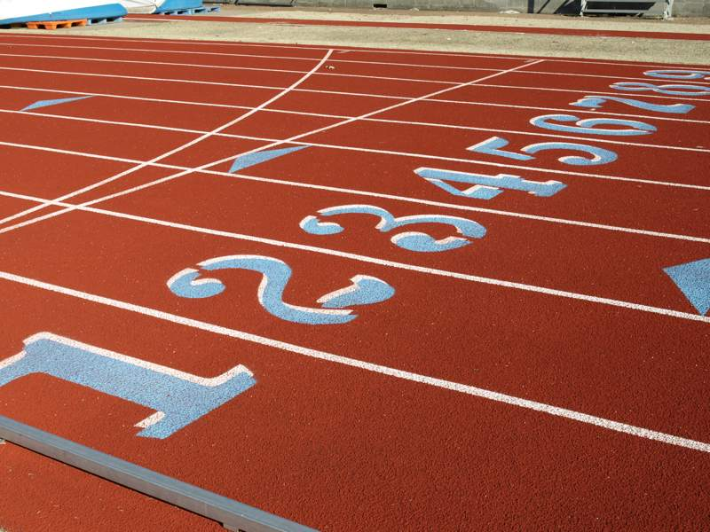

LA MIA PASSIONE:L'ATLETICA LEGGERA
L’atletica leggera è un’attività sportiva fondamentale per l’uomo, legata alle origini del movimento umano. Nell’antichità correre, saltare, lanciare voleva dire sopravvivere. Nei secoli le attività motorie umane si sono sempre più ridotte, grazie al progressivo intervento delle macchine e dell’utilizzo dell’energia. Ma la natura motoria dell’uomo moderno non è diversa da quella dei nostri antenati. Anche se le possibilità di movimento sono diminuite, l’uomo non ha dimenticato come muoversi. Ecco che il tempo libero (dalla famiglia, dal lavoro o da altro) viene impiegato per soddisfare le esigenze di movimento insite nell’uomo. La creatività dell’uomo inventa nuove forme di movimento con regole ed accorgimenti che hanno l’obiettivo di muovere e di divertire, di soddisfare non solo il corpo ma anche la mente. Le attività motorie umane si sono quindi sempre più perfezionate nei vari sport, nelle forme e negli ambienti più svariati.
